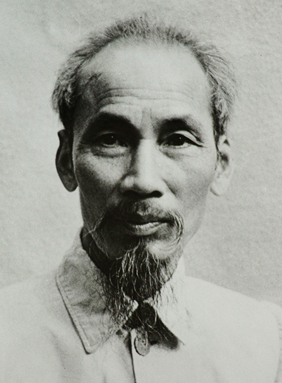
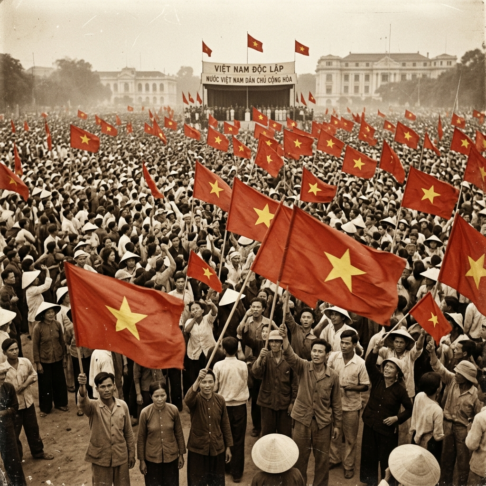

Hệ thống quan điểm toàn diện và sâu sắc về những vấn đề cơ bản của cách mạng Việt Nam, kết quả của sự vận dụng và phát triển sáng tạo chủ nghĩa Mác - Lênin vào điều kiện cụ thể của nước ta.

Vì sao chúng ta nghiên cứu Tư tưởng Hồ Chí Minh?

Quảng trường Ba Đình, 2/9/1945
Hiểu rõ hệ thống quan điểm của Chủ tịch Hồ Chí Minh về cách mạng Việt Nam.
Nền tảng tư tưởng và kim chỉ nam cho hành động của Đảng và cách mạng.
Xây dựng thế giới quan, phương pháp luận khoa học, bồi dưỡng phẩm chất đạo đức.
Nhấn vào từng giai đoạn để xem chi tiết
Tiếp thu truyền thống tốt đẹp của dân tộc, tinh hoa văn hóa nhân loại. Hình thành hoài bão cứu nước.
Khảo nghiệm thực tiễn, đến với chủ nghĩa Mác - Lênin. Bước ngoặt từ chủ nghĩa yêu nước đến chủ nghĩa cộng sản.
Nghiên cứu, truyền bá chủ nghĩa Mác - Lênin. Sáng lập Đảng Cộng sản Việt Nam với Cương lĩnh chính trị đầu tiên.
Lãnh đạo cách mạng giải phóng dân tộc tiến tới Cách mạng Tháng Tám thành công, lập nên nước VNDCCH.
Tư tưởng về kháng chiến, kiến quốc. Về xây dựng CNXH ở miền Bắc và đấu tranh giải phóng miền Nam.
Nhấn vào từng chương để xem kiến thức trọng tâm chi tiết
Cung cấp tri thức nền tảng về khái niệm, đối tượng nghiên cứu và ý nghĩa học tập đối với sinh viên.
Nhấn để xem chi tiếtNguồn gốc lý luận, thực tiễn và các giai đoạn hình thành, phát triển tư tưởng Hồ Chí Minh.
Nhấn để xem chi tiếtSợi chỉ đỏ xuyên suốt của cách mạng: Độc lập dân tộc phải gắn liền với chủ nghĩa xã hội.
Nhấn để xem chi tiếtVai trò lãnh đạo của Đảng và xây dựng Nhà nước pháp quyền XHCN "của dân, do dân, vì dân".
Nhấn để xem chi tiết"Đoàn kết, đoàn kết, đại đoàn kết. Thành công, thành công, đại thành công".
Nhấn để xem chi tiếtTư tưởng về sức mạnh mềm: văn hóa soi đường, tu dưỡng đạo đức cách mạng, chiến lược trồng người.
Nhấn để xem chi tiếtLiên hệ vận dụng tư tưởng Hồ Chí Minh trong bối cảnh Việt Nam hiện đại
Đẩy mạnh sự nghiệp đổi mới, CNH-HĐH đất nước gắn với phát triển kinh tế tri thức. Xây dựng nền kinh tế thị trường định hướng XHCN.
Xây dựng thế trận lòng dân vững chắc, bảo vệ chủ quyền biên giới, biển đảo. Kết hợp phát triển kinh tế với quốc phòng - an ninh.
Đẩy mạnh học tập và làm theo tư tưởng, đạo đức, phong cách Hồ Chí Minh. Phòng chống "tự diễn biến", "tự chuyển hóa".
Đường lối đối ngoại "thêm bạn, bớt thù". Việt Nam là thành viên tích cực của ASEAN, Liên Hợp Quốc, WTO...
Đổi mới căn bản, toàn diện giáo dục. Bảo tồn và phát huy bản sắc văn hóa dân tộc trong hội nhập quốc tế.
Sinh viên tình nguyện, hiến máu nhân đạo, mùa hè xanh... Vận dụng tinh thần Bác Hồ trong thực tiễn đời sống hàng ngày.
Những câu hỏi thảo luận phổ biến trong học phần
Là tư tưởng về độc lập dân tộc gắn liền với chủ nghĩa xã hội. Giải phóng dân tộc, giải phóng giai cấp, giải phóng con người là mục tiêu xuyên suốt. Đây là sợi chỉ đỏ chi phối toàn bộ hệ thống tư tưởng, đạo đức, phong cách Hồ Chí Minh.
Học tập nâng cao trình độ chuyên môn, rèn luyện đạo đức "Trung với nước, hiếu với dân", có tinh thần tương thân tương ái, ý chí tự lập tự cường, chống bệnh lười biếng. Cụ thể: chăm chỉ học tập, tham gia hoạt động tình nguyện, giữ gìn lối sống lành mạnh, đấu tranh chống tiêu cực.
Dân là chủ thể của đất nước. "Bao nhiêu lợi ích đều vì dân. Bao nhiêu quyền hạn đều của dân". Tư tưởng này định hướng xây dựng Nhà nước pháp quyền XHCN — nhà nước thật sự là của nhân dân, đảm bảo quyền lực thuộc về nhân dân.
Vì độc lập dân tộc mà không có CNXH thì độc lập đó cũng không có ý nghĩa gì. Theo Hồ Chí Minh: "Nước độc lập mà dân không hưởng hạnh phúc tự do, thì độc lập cũng chẳng có nghĩa lý gì". CNXH chính là con đường để đảm bảo quyền lợi thực sự cho nhân dân sau khi giành được độc lập.
"Đoàn kết, đoàn kết, đại đoàn kết. Thành công, thành công, đại thành công" — Đoàn kết là sức mạnh vô địch. Tư tưởng đại đoàn kết toàn dân tộc bao gồm: đoàn kết trong Đảng, đoàn kết dân tộc (Mặt trận Tổ quốc), đoàn kết quốc tế (với các nước XHCN, phong trào giải phóng dân tộc, lực lượng hòa bình, tiến bộ trên thế giới).